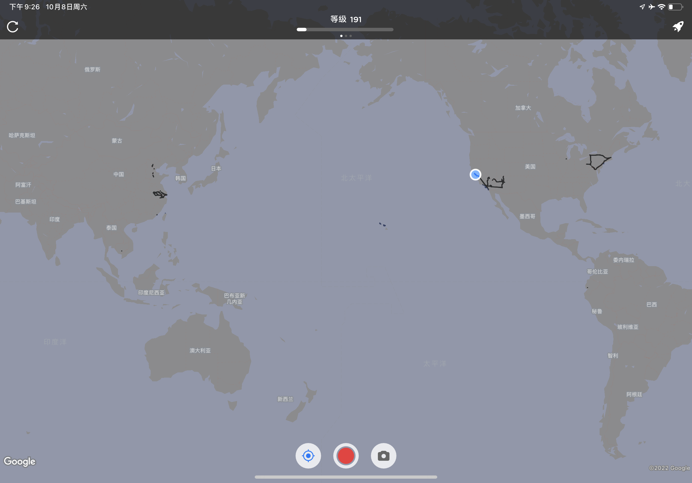
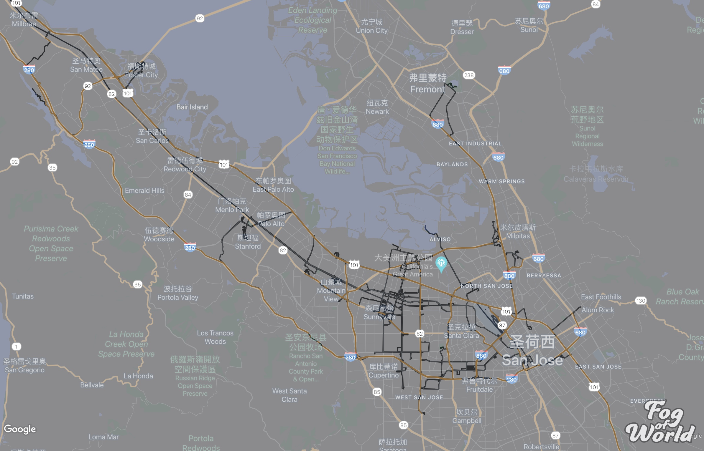

Fog of World 世界迷雾
这篇博客分享我最喜欢的手机应用——世界迷雾，以下是使用截图：
 World (2017~
 Bay Area (2022.7~
这个应用可以记录我在地球上的所有足迹，带来游戏体验感和帮助回忆去过的地方。
使用说明
只需打开始终允许访问位置，并且当前手机GPS信号正常，应用就可以在地图上记录，消除迷雾。实际使用中，在高铁和飞行较低的飞机靠窗位置，也有可能接收GPS信号。使用云备份，防止数据丢失。
护照和徽章


「西方的哪一个国家我没去过？」
迷雾机器（第三方扩展
由于之前导入了航班飞行路线，使得地图非常凌乱。迷雾机器可以对迷雾地图数据进行可视化编辑。将修改后的文件存放云端，再同步手机即可。
Last modified on 2022-10-08